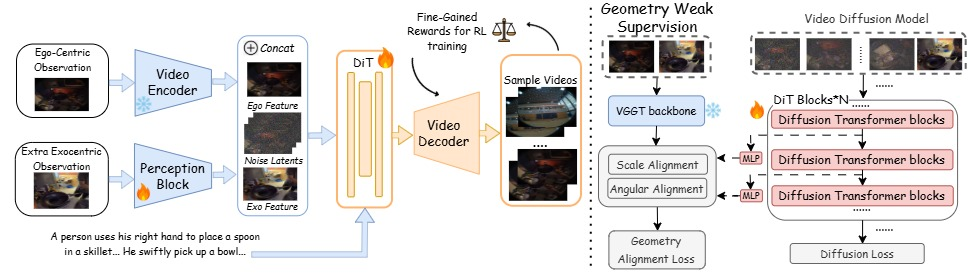
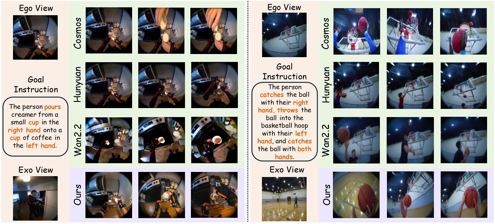
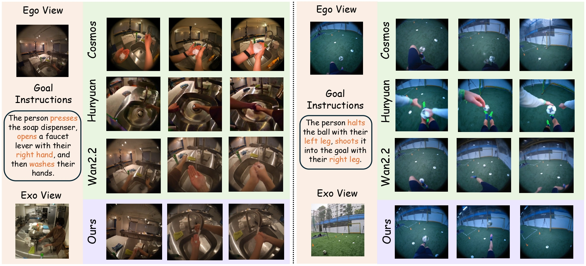
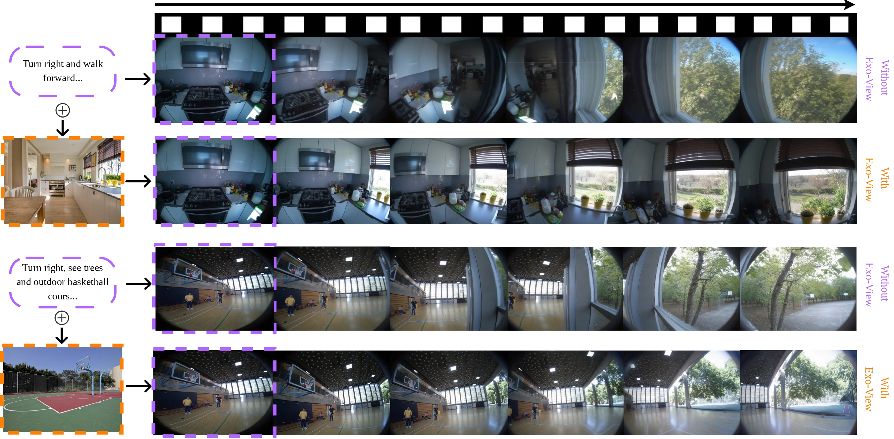
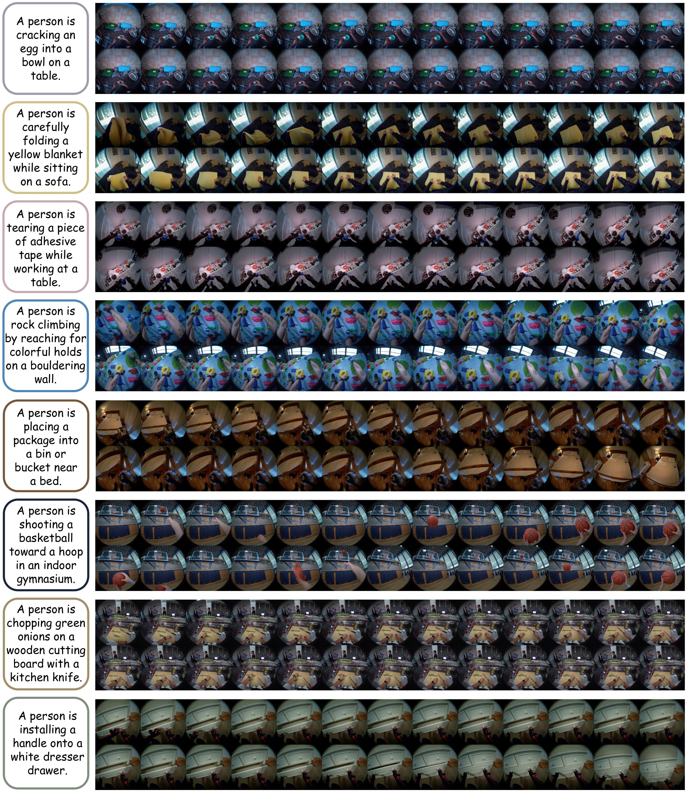
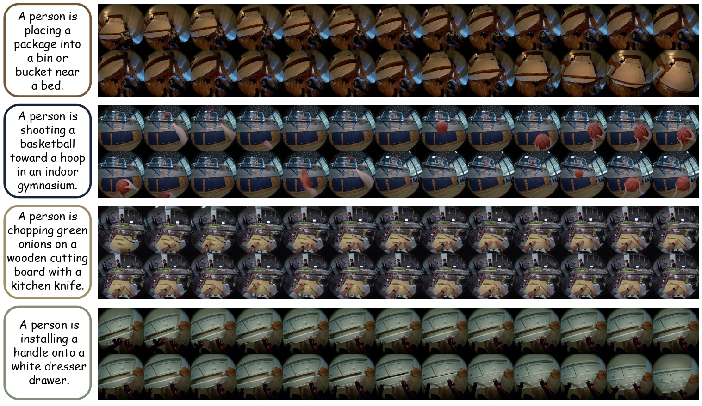

EgoForge: Goal-Directed Egocentric World Simulator
Abstract
Generative world models have shown promise for simulating dynamic environments, yet egocentric video remains challenging due to rapid viewpoint changes, frequent hand–object interactions, and goal-directed procedures whose evolution depends on latent human intent. Existing approaches either focus on hand-centric instructional synthesis with limited scene evolution, perform static view translation without modeling action dynamics, or rely on dense supervision such as camera trajectories, long video prefixes, or synchronized multi-camera capture.
In this work, we introduce EgoForge, an egocentric goal-directed world simulator that generates coherent, first-person video rollouts from minimal static inputs: a single egocentric image, a high-level instruction, and an optional auxiliary exocentric view. To improve intent alignment and temporal consistency, we propose VideoDiffusionNFT, a trajectory-level reward-guided refinement that optimizes goal completion, temporal causality, scene consistency, and perceptual fidelity during diffusion sampling. Extensive experiments show EgoForge achieves consistent gains in semantic alignment, geometric stability, and motion fidelity over strong baselines, and robust performance in real-world smart-glasses experiments.
Method

Figure 2: EgoForge Overview. Given a single egocentric observation, a high-level (instruction) intent, and an auxiliary exo-view reference, EgoForge fuses encoded visual features with noisy video latents at each DiT block to guide generation. Geometry alignment weakly supervises intermediate features using angular and scale consistency to encourage spatially stable rollouts. The resulting rollout videos are further refined via a novel VideoDiffusionNFT alignment policy that optimizes goal completion, scene consistency, temporal causality, and perceptual fidelity.
Diffusion-Based Egocentric Generator
EgoForge models egocentric video generation in the latent space of a pretrained video autoencoder, conditioned on context 𝒞 = {ego image, instruction y, exo reference} through adaptive normalization and cross-attention. Unlike prior work, EgoForge does not require camera trajectories, pose signals, or synchronized multi-view streams at inference time.
Geometry Weak Supervision
To inject 3D reasoning into the diffusion backbone, EgoForge aligns intermediate DiT representations with geometry features from a pretrained VGGT encoder via two losses:
- Angular Alignment (ℒang): Cosine similarity loss that encourages diffusion features to match the direction of VGGT geometry features at each spatial–temporal token.
- Scale Alignment (ℒsca): MSE loss between projected diffusion features and VGGT features to prevent scale collapse.
VideoDiffusionNFT Alignment
VideoDiffusionNFT extends DiffusionNFT to the video domain and performs negative-aware finetuning with four fine-grained reward functions evaluated on entire video trajectories:
- Goal Completion (ℛgoal): Evaluates whether the trajectory successfully achieves the task outcome, measured by similarity of the final state to the target reference.
- Scene Consistency (ℛenv): Measures consistency with the initial scene, penalizing drift, misplaced objects, or transitions into unrelated environments.
- Temporal Causality (ℛtemp): Assesses whether motion evolves in a physically plausible, coherent, and causal manner without temporal artifacts.
- Perceptual Fidelity (ℛper): Captures overall visual clarity, stability, and absence of distortions or artifacts (PSNR + FVD + LPIPS).
Quantitative Results
Table 3: Quantitative comparisons on the X-Ego benchmark. EgoForge outperforms all baselines across semantic, perceptual, and temporal metrics.
| Model | DINO-Score↑ | CLIP-Score↑ | SSIM↑ | LPIPS↓ | FVD↓ | Flow MSE↓ | PSNR↑ |
|---|---|---|---|---|---|---|---|
| EgoDreamer | 42.35 | 25.40 | 0.58 | 0.35 | 580.45 | 8.15 | 15.20 |
| Handi | 31.12 | 18.25 | 0.42 | 0.52 | 912.30 | 14.50 | 12.85 |
| Cosmos | 49.42 | 29.77 | 0.70 | 0.26 | 448.12 | 6.40 | 18.73 |
| HunyuanVideo | 53.54 | 29.43 | 0.71 | 0.26 | 384.31 | 6.10 | 18.88 |
| WAN2.2 | 53.99 | 35.69 | 0.72 | 0.23 | 322.17 | 5.78 | 20.44 |
| EgoForge (Ours) | 61.25 | 39.30 | 0.79 | 0.15 | 182.25 | 2.83 | 24.08 |
Table 2: Quantitative comparisons with enhanced baseline variants (+EV: exo-view image; +TT: text-only domain adaptation; +CI: our conditioning inputs with Geometry Weak Supervision). EgoForge still achieves best results across all seven metrics.
| Model | DINO-Score↑ | CLIP-Score↑ | SSIM↑ | LPIPS↓ | FVD↓ | Flow MSE↓ | PSNR↑ |
|---|---|---|---|---|---|---|---|
| Cosmos+EV | 48.60 | 29.60 | 0.67 | 0.28 | 485.75 | 6.82 | 18.30 |
| Cosmos+TT | 50.80 | 30.40 | 0.71 | 0.25 | 433.90 | 6.31 | 18.88 |
| HunyuanVideo+EV | 52.80 | 29.20 | 0.70 | 0.27 | 405.87 | 6.30 | 18.61 |
| HunyuanVideo+TT | 54.10 | 29.86 | 0.72 | 0.24 | 365.80 | 5.95 | 19.10 |
| WAN2.2+EV | 52.91 | 35.11 | 0.71 | 0.27 | 352.41 | 6.25 | 20.05 |
| WAN2.2+TT | 54.80 | 36.20 | 0.73 | 0.25 | 310.57 | 5.60 | 20.64 |
| WAN2.2+CI | 58.92 | 38.05 | 0.76 | 0.18 | 218.72 | 3.92 | 22.87 |
| EgoForge (Ours) | 61.25 | 39.30 | 0.79 | 0.15 | 182.25 | 2.83 | 24.08 |
Table 4: User study (1–5 scale, 20 annotators, 25 video groups). EgoForge achieves substantial gains in Alignment (4.75) and Fidelity (4.71). * best model variants from Table 2.
| Model | Quality↑ | Fidelity↑ | Smooth Motion↑ | Smooth Env.↑ | Alignment↑ |
|---|---|---|---|---|---|
| Cosmos* | 3.29 | 2.54 | 3.07 | 2.47 | 2.19 |
| Hunyuan* | 3.46 | 2.86 | 3.72 | 3.16 | 3.08 |
| WAN2.2* | 3.22 | 3.48 | 3.82 | 4.07 | 3.15 |
| EgoForge (Ours) | 4.58 | 4.71 | 4.25 | 4.48 | 4.75 |
Table 5: Ablation on EgoForge modules (FT = Denoising Fine-Tuning, GWS = Geometry Weak Supervision). Each component consistently improves performance, with the full model achieving best results.
| FT | GWS | VideoDiffusionNFT | DINO↑ | CLIP↑ | SSIM↑ | LPIPS↓ | FVD↓ | Flow MSE↓ | PSNR↑ |
|---|---|---|---|---|---|---|---|---|---|
| ✓ | ✗ | ✗ | 56.81 | 37.10 | 0.74 | 0.21 | 260.89 | 4.82 | 21.92 |
| ✓ | ✓ | ✗ | 58.92 | 38.05 | 0.76 | 0.18 | 218.72 | 3.92 | 22.87 |
| ✓ | ✓ | ✓ | 61.25 | 39.30 | 0.79 | 0.15 | 182.25 | 2.83 | 24.08 |
Qualitative Results: Comparison with Baselines

Figure 3: Qualitative comparison between EgoForge and baselines. EgoForge accurately reconstructs multi-step, causally ordered actions, preserving hand–object geometry, temporal consistency, and goal alignment. In the first example (coffee pouring), Cosmos erroneously generates a third hand, Hunyuan depicts a disconnected arm, and Wan2.2 fails to complete the task. In the second example (basketball), Cosmos generates multiple balls, while Hunyuan and Wan2.2 generate an incorrect person. EgoForge accurately completes both tasks.

Figure 4: Qualitative comparison: hand-washing task (top) and soccer task (bottom). In the hand-washing task, baselines struggle with object consistency (Cosmos hallucinates the soap source; Wan2.2 bypasses the on-table soap), while EgoForge successfully executes the action using existing objects. In the soccer task, baselines exhibit ghosting (Cosmos) or fail to follow precise instructions (Hunyuan, Wan2.2). EgoForge accurately traps with the left leg and shoots with the right.
Qualitative Results: With vs. Without Exocentric Input

Figure 5: Qualitative comparison of EgoForge with vs. without exocentric input. Rows 1 & 3 ("Without Exo-View") use text prompt alone; Rows 2 & 4 ("With Exo-View") additionally provide an auxiliary exocentric image. The kitchen scene (Row 2) correctly incorporates the potted plants on the windowsill from the reference image; the basketball court scene (Row 4) adopts the red and green rubberized surface. EgoForge can be successfully steered toward simulations that inherit key semantic and stylistic properties from the reference exo-view.
Qualitative Results: Long-Duration Sequences


Figure 6: Dense visualization of long-duration sequences. We present 26 frames from each of 8 videos generated by EgoForge — cracking an egg, folding a blanket, tearing adhesive tape, rock climbing, placing a package, shooting a basketball, chopping onions, and installing a drawer handle — to highlight seamless transitions and stable dynamics in complex egocentric tasks.
BibTeX
@article{shen2025egoforge,
title={EgoForge: Goal-Directed Egocentric World Simulator},
author={Shen, Yifan and Liu, Jiateng and Li, Xinzhuo and Liu, Yuanzhe and Li, Bingxuan and Yang, Houze and Jia, Wenqi and Li, Yijiang and Yu, Tianjiao and Rehg, James Matthew and Cao, Xu and Lourentzou, Ismini},
journal={arXiv preprint},
year={2025}
}